|
Created: 02/22/03. Revised:
02/21/09
. Copyright © 2003 - 2009 by Victor Manta, Switzerland. All rights reserved worldwide. |
Click the above image to visit the site |
|
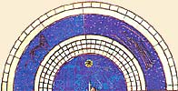 |
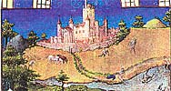 |
The Très Riches Heures, conserved at the Musée Condé, Chantilly, France, is the classic example of a medieval book of hours. This was a collection of the text for each liturgical hour of the day - hence the name - which often included other, supplementary, texts. Calendars, prayers, psalms and messes for certain holy days were commonly included. The Très Riches Heures is by common consent one of the supreme masterpieces of manuscript illumination and the archetype of the International Gothic style.
|
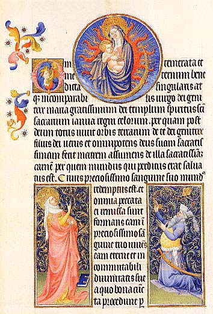 |
Its most original and beautiful feature is the series of twelve
full-page illustrations of the months--the first time a calendar was so
lavishly treated--full of exquisite ornamentation and beautifully observed
naturalistic detail. The Très Riches Heures was painted by the Limbourg brothers, Paul, Hermann and Jean. They came from Nimwegen in what is now Flanders but were generally referred to as Germans. Very little is known about them; they are believed to have been born in the late 1370s or 1380s and were born into an artistic family, their father being a wood sculptor and their uncle being an artist working variously for the French Queen and for the Duc de Bourgogne. They seem to have followed in their uncle's footsteps and by 1402 had entered into the service of the Duc de Bourgogne as artists. By 1408 they had entered the service of Jean, Duc de Berry, one of the most notable (and richest!) art lovers in France. |
They are known to have executed several other pieces of work apart from the Très Riches Heures but most of these, with the major exception of the Très Belles Heures, seem to have been lost. In around February 1416 all three Limbourg brothers died before the age of thirty, apparently killed by an epidemic.
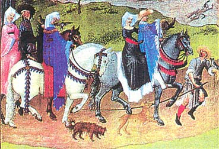
Jean de Berry (1340 - 1416) was one of the highest nobles in 15th-century France - his brothers were King Charles V, the Duc d'Anjou and the Duc de Bourgogne, and his nephews were King Charles VI and the Duc d'Orleans.
He was the medieval world's greatest connoisseur of the visual arts, with
a particular fondness for jewels, castles, works of art and exotic
animals. He ordered the building of a number of castles and filled each
with specially commissioned works of art, including tapestries, paintings,
and jewels. He is reputed to have owned 1,500 dogs. Among his
extraordinarily varied collection were chateaux such as Saumur and Bicetre,
rubies weighing up to 240 carats, a collection of ostriches and camels and
- most importantly from our point of view - a magnificent collection of
books. He owned astronomical treatises, mappamondes, and a large number of
religious books: 14 Bibles, 16 psalters, 18 breviaries, 6 missals and no
less than 15 Books of Hours, including of course the Très Riches Heures.
The Limbourgs used a wide variety of colours obtained from minerals, plants or chemicals and mixed with either arabic or tragacinth gum to provide a binder for the paint. |
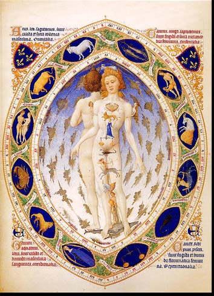 |
Amongst the more unusual colours they used were vert de flambe, a green obtained from crushed flowers mixed with massicot, and azur d'outreme, an ultramarine made from crushed Middle Eastern lapis-lazuli, used to paint the brilliant blues which was extremely expensive). The extremely fine detail which was the characteristic feature of the Limbourgs needed extremely fine brushes and, almost certainly, lenses.
|
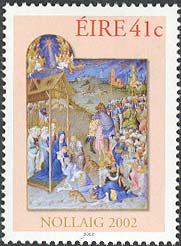 |
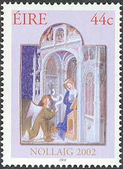 |
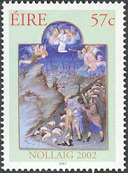 |
Later additions to the Très Riches Heures carried out by the late 15th-century artist Jean Colombe were carried out in a rather less delicate way. The calendars, however, were mostly painted by the Limbourgs; only November includes a substantial amount of Colombe's work. (After:http://www.ibiblio.org/wm/rh/what.html).
We present on this page two stamp issues dedicated to the Très Riches Heures, issued at different times and by two different countries. The first of them was issued in 1965 by France (Sc. 1115), and shows the "August" painting. We see on it courtly lovers riding to hunt with their falcons, while the great white ducal castle gleams in the distance and the haymakers shed their clothes to take a swim in a stream. Blue upper part of the painting shows an astrological hemisphere.
|
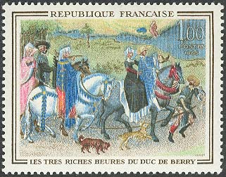
The Limbourg Brothers |
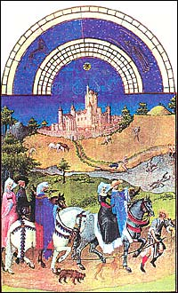 |
The Irish Christmas set was issued on 7th November 2002. It shows various paintings from the Limbourgs Brothers masterpiece. The first stamps (left) shown on the FDC appeared only in a booklet of 24 stamps.
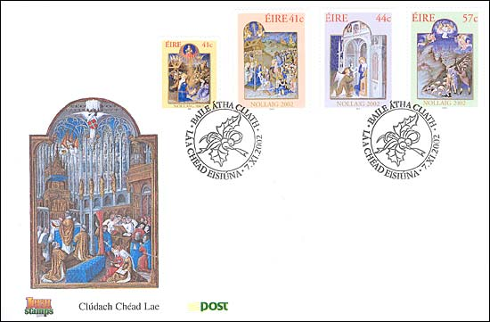
Other interesting medieval works of art on stamps:
|
Created: 02/22/03. Revised:
02/21/09
. Copyright © 2003 - 2009 by Victor Manta, Switzerland. All rights reserved worldwide. |
Click the above image to visit the site |
|